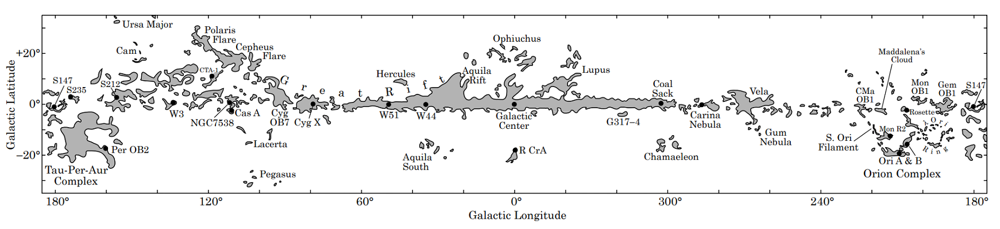
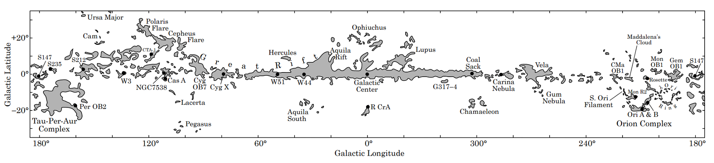

Setting up the stage
Contents
Setting up the stage#
Introduction
It is commonly assumed by the public that appart from stars, our galaxy is empty, filled by void (as our eyes can see we we observe the night sky). And even though the vaccum we can achieve on Earth is higher than what we found in space, assuming that the medium between the stars (rightfully named the Interstellar Medium) is empty, is a big misconception.
Plan
-
Galactic ecocystem and star lifecycle
Structure and environments
-
Formation and evolution
Structure
-
Observation
Extinction of star light
Distribution throughout the Galaxy
Properties
Molecular factories
Star nurseries
Notes
To Do
Write the content, and send to Anita when happy
Supervisors
Taking into consideration that this content is aimed at bachelor student or science enthusiast, what do you think about the format? The plan ?
Page
Status:

Reviewed: ❌
Updated: 15/02/2023
The Interstellar Medium#
‣ Galactic Ecocystem and Star lifecycle #
It is not unlikely in life that birth story start with death. So is the case for plants, whose death replenish the earth with organic matter that will make the terrain fertile for a new plant to emerge. Stars are no different in that respect and their life goes in cycle and the ISM is their ecocystem.

Fig. 3 Figure caption#
The Big Bang produced all the Hydrogen (as well as Helium and Lithium) present today in the universe. The rest of the elements of the periodic table (called metal by Astronomers), up to iron (Z = 26), has been produced in the center of stars in a process called nucleosynthesis. However, it is only when the star die in a massive explosion like supernovae, that those heavy elements are ejected throughout the Universe. We are now 14.6 Billion years post Big Bang and at the third generation of stars, galaxies have had time to form and they will be our host for the rest of this discussion. So what are galaxies made of ? Well, a supermassive Black hole at the center and then stars (may be solar systems) as far as our eyes can see, but this would be omitting the major constituent of the
Note
Introduce the ISM
cycle
Stars produce Ashes during their lifetime that are dispersed into the Diffuse ISM
Big dust production when they die (supernovae)
‣ Structure and environments #
{kind=link}
Fig. 4 show those different environments represented in an Onion like structure.
 Onion layers
Onion layers
Coronal gas, also known as coronal plasma, is a type of hot, highly ionized gas that is found in the outermost atmosphere of stars, known as the corona, that is the source of the solar wind and of coronal mass ejections. It is characterized by its extremely high temperatures, typically around 1 to 10 million degrees Celsius. This is much hotter than the surface of the star, which is typically around 5,500 to 5,800 degrees Celsius for the sun. Coronal gas is composed mostly of hydrogen and helium, as well as small amounts of other elements such as carbon, nitrogen, and oxygen. The high temperatures of this gas cause the atoms to become highly ionized.
Coronal gas is a subject of ongoing research in astrophysics and heliophysics, as scientists try to understand how the corona is heated and how this relates to the solar wind and other solar activity
Litterature
Neutral
Temperature is around 8000K, density is around 0.1 to 1 particle per cubic centimeter, hydrogen is mostly neutral (H)
Ionized
Temperature is around 8000 K, density is around 0.1 to 1 particle per cubic centimeter, hydrogen is mostly ionized (H+)
Litterature
Description
Litterature
Description
Litterature
Description
Litterature
Description
Litterature
Description
Litterature
Note
Evolution of material through the ISM
Diffuse ISM - radiation - no ice
Interconnectivity of the different environments - material exchange
From low to high density environments
Finally end up in the densest environments of the ISM, molecular clouds
Interstellar Dust Grains#
We have seen that dust grains are present in the ISM and play a key role in it's evolution but what are they and how do they come from
‣ Formation and evolution #
Interstellar dust form through a combination of processes in the interstellar medium (ISM). One of them is the condensation from the ejecta of evolved stars. As stars come closer to the end of their lives, they often experience mass loss through winds and outbursts, which can lead to the formation of dust grains. We had a recent great example of such processes with the star Betelgeuse that is explain below:
{kind=link}
Scientific Observations
{kind=link}
{kind=link}
{kind=link}
{kind=link}
Review: Carbonaceous grains [Herrero et al., 2022]
Interstellar dust is the Ariane thread connecting star death with star formation after having evolved through the ISM.
‣ Structure #
{kind=link}
Fig. 8 Interstellar Dust#
Structure
Core
Silicate or carbonaceous material …
Ice layer
check formation processses
Condensation temperature
sub-µm dust grains
[Williams, 2000] - from ashes to dust
Here is a typical dust grain that can be found inside a Molecular clouds. Because low temperature the grain is surrounded by an icy layer.
This ice layer is responsible for most of the chemistry observed in the ISM
link to molecular zoo …
Paragraph
Note
Introduction to dust
Ice - link to intro Thesis.A with more details
Dust processing within MC: preliminary growth up to µm sizes.
Role in chemistry
Ice formed by atomic deposition, diffusion, reaction of atomic species to form molecules.
Astrophysics of dust grains
physical optics of small particles
charging of dust grains
heating and cooling of dust grains
chemistry on dust grain surfaces
forces and torques on dust grains
sputtering and shattering of dust grains
alignment of dust with the magnetic field
introduction to these topics can be found elsewhere (Kr¨ugel 2002, Draine 2003a)
Molecular Clouds#
‣ Observation #
‣ ‣ Extinction of star light #
{kind=link}
{kind=link}
B68 was first observed in 1785 by the great astronomers William Hershell, nonetheless he described it unapropriately as
" Hole in the sky "
Woman in Science ⚠ - Caroline Hershell
Caroline Hershell (his wife), was a much less famous but non less great scientist. It is thanks to a correspondance between her and her nephew that the discovery was revived after having fall into oblivion.
Indeed, our dear William couldn’t have been more wrong (yes, it happens to everybody, including the greatest) [Steinicke et al., 2016]. Molecular Clouds are full gus and dust particles like we have described abova and this it the reason why they obstruct the light of stars in the background, a process called extinction. It is a very important concept because most of our knowledge of interstellar dust is derived from the interaction of dust particles with electromagnetic radiation:
‣ ‣ ‣ How does it work ? #
Absorption / Scattering
Attenuation of starlight Aλ
Wavelength dependance of interstellar extinction gives information about the size and composition of the grains. Best determined using the pair method.
RV
‣ ‣ Distribution #
 

For an interactive view of the Galaxy at multiple wavelength over the whole electromagnetic spectrum, check Chromoscope .
The most famous Molecular Clouds (and some of their science)
Litterature
Litterature
Description
Litterature
Description
Litterature
‣ Properties #
‣ ‣ Molecular factory #
Quiescent over long timescales. Shield dust from radiation …
‣ ‣ Star nursery #
{kind=link}
{kind=link}
Star nurseries
Our fascinating story of stars and planet formation begins in the darkest and coldest places of the Interstellar Medium, Molecular Clouds. Those clouds, made of gas and dusts are the cocoons within which star forms. They evolve for […] years, …
Clumps
Critical mass - Jeans instability
Note
Star nursery
Gas + Dust, High density, protected from radiation
Diverse molecular content, Chemistry - How ?
Surface of dust grains
Triggering star formation#
How does the process of star formation beggin ? not out of the blue
Contraction of molecular cloud OK but what else
A Brief History of our own Solar system#
4.6 Billion years ago …
{kind=link}